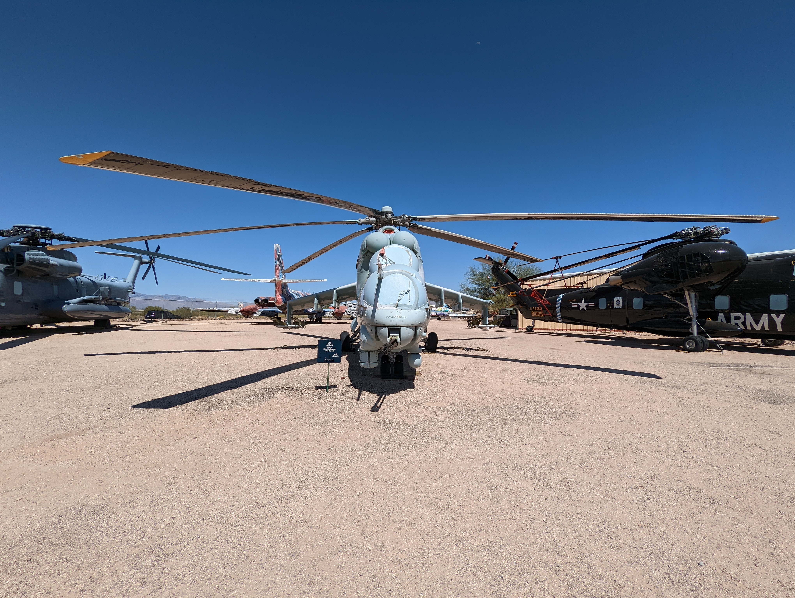
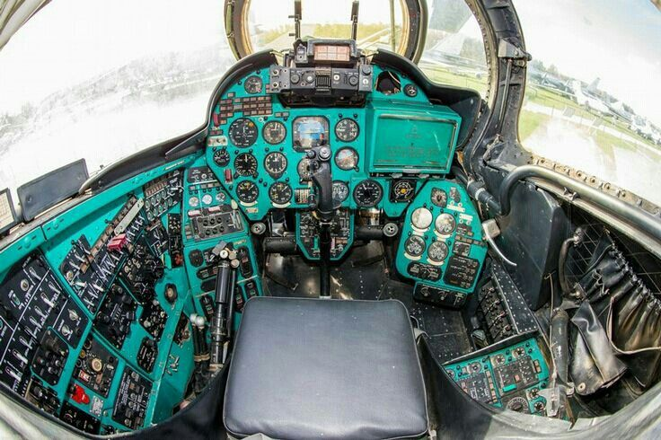

Synopsis
The MI-24 Hind is a Soviet/Russian attack helicopter known for its heavily armed and armored platform that provides close air support to ground troops. It features a 30mm cannon, rocket pods, and anti-tank missiles, making it a powerful weapon on the battlefield. It has seen action in conflicts around the world and is recognizable by its large cockpit and tandem rotor design. With the ability to carry up to eight troops in addition to its crew of two, the MI-24 Hind is a versatile aircraft for both combat and transport missions, and has undergone upgrades to remain relevant on the modern battlefield.
Design
The design of the MI-24 Hind is unique, with its tandem rotor layout and large cockpit. The cockpit is heavily armored to protect the crew and has large windows for increased visibility. The helicopter's fuselage is also heavily armored, providing protection against small arms fire and shrapnel. The helicopter's weapons systems are mounted on the sides of the fuselage, giving it a distinctive look. Its large, powerful engines provide the thrust needed for both transport and combat missions, and the helicopter's wide landing gear allows it to land on uneven terrain. Overall, the design of the MI-24 Hind prioritizes protection, firepower, and versatility.

Capabilities
Its weapons systems, including the 30mm cannon, rocket pods, and anti-tank missiles, make it a potent force on the battlefield, capable of taking out a range of targets. The helicopter's heavily armored design also makes it an effective platform for close air support missions, providing protection for ground troops. In addition to its combat capabilities, the MI-24 Hind can also be used for troop transport, with the ability to carry up to eight soldiers in addition to its two crew members. Its powerful engines allow it to fly at high speeds and altitudes, making it an effective weapon in a range of environments. The MI-24 Hind's versatility and durability have made it a popular choice for many militaries around the world, and it continues to be in service today.